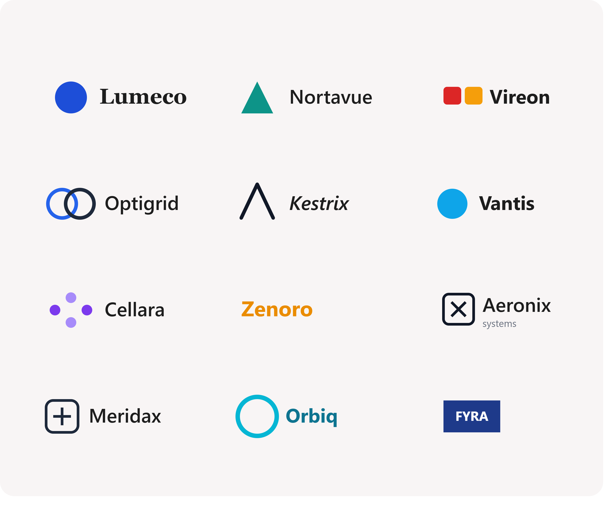

Early Detection for
Better Vision
Detect diabetic eye diseases quickly and accurately using our AI-powered screening platform. Upload retinal fundus images to receive instant disease classification, severity prediction, confidence scores, and AI-assisted medical reports.

Trusted by leading ophthalmology institutions and diabetic eye care professionals
AI-Powered Diabetic Eye Disease Detection

Retinal Image Analysis
Upload retinal fundus images for automated analysis. Our optimized deep learning model detects diabetic eye diseases by examining retinal abnormalities with high accuracy.

AI Disease Detection
Receive disease classification within seconds. The AI model identifies different stages of diabetic eye diseases, helping healthcare professionals make faster clinical decisions.

Diagnosis & Reports
Generate detailed screening reports with disease severity predictions and recommendations for timely treatment, enabling early intervention and improved patient care.
How it works
60+ retinal images and clinical data sources
Upload retinal fundus images and OCT scans into our AI-powered screening system and receive automated diabetic eye disease classification using an optimized deep convolutional model.

Compliant and operational in days
Whether you run a single clinic or a large hospital chain, DiaVision has a proven track record of fast, compliant installations and focused training. Time matters and your customers and patients expect a seamless experience.
That’s why we’re proud to be the vendor with the highest number of real-life screenings: more than 5 million and counting. In fact, a new screening is performed every 35 seconds.